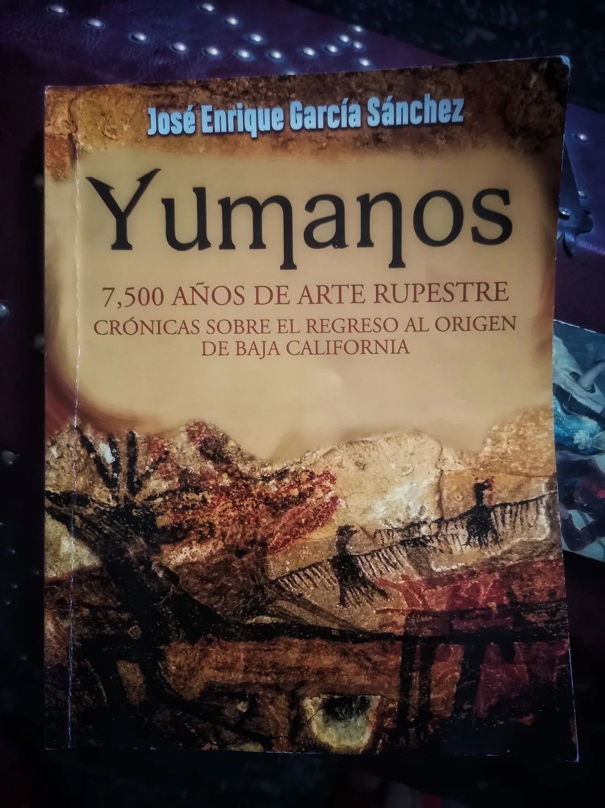
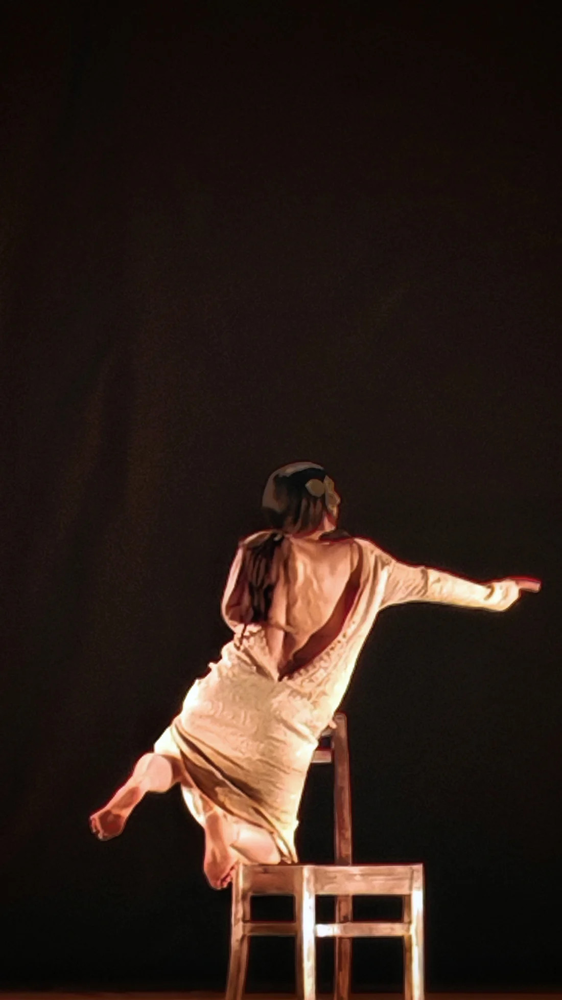
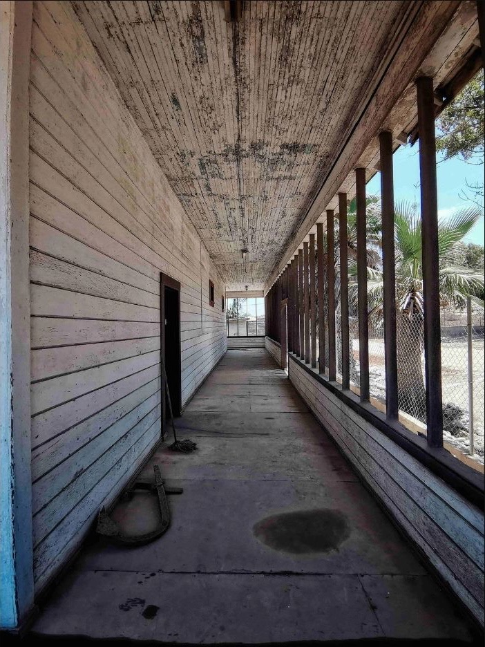

De la península como un archivo vivo
Yumanos: 7,500 Años de Arte Rupestre explora la memoria, el territorio y el arte ancestral de los pueblos yumanos desde una ética de la mirada.
Leer entradaPublicaciones
Catálogo de ideas más o menos infrecuentes.
Archivo cronológico de publicaciones.

Yumanos: 7,500 Años de Arte Rupestre explora la memoria, el territorio y el arte ancestral de los pueblos yumanos desde una ética de la mirada.
Leer entrada
El sentimiento del tiempo, de Lola Lince, explora cuerpo, respiración y límite en una danza donde el movimiento produce y transforma el tiempo.
Leer entrada
Un ensayo sobre Keila Nicole Duarte Acevedo, San Quintín y El Rosario que aborda feminicidio, memoria, territorio y cultura de paz.
Leer entrada